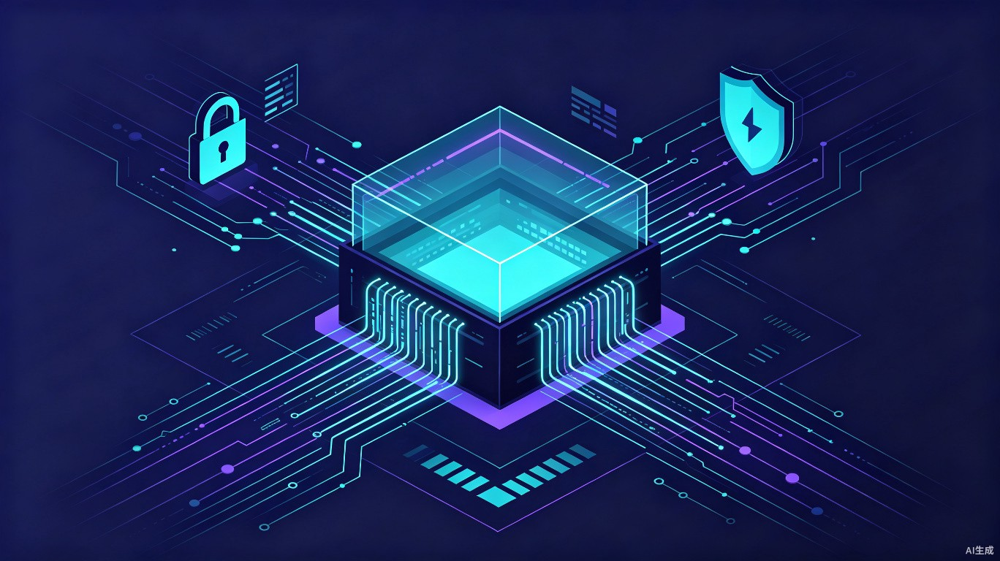

想解决什么问题？
越来越多企业开始使用 AI Agent 处理文件、发送邮件、调用系统和生成业务建议，但企业很难知道 AI 具体看了什么、做了什么、有没有越权操作。如果 Agent 把内部报价、客户名单、未发布资料误发给外部人员，企业可能会面临数据泄露和商业损失。
AI Agent 正在从"回答问题"变成"替人做事"，但很多产品只关注 Agent 能不能完成任务，很少关注它做事时是否安全、是否合规、是否可追责。
AI 黑匣子希望在 AI Agent 自动执行关键动作前，增加一层可追踪、可拦截、可复盘的安全机制——让企业敢用 AI，也能管住 AI。
核心能力
全链路追踪
记录 AI Agent 从感知到执行的完整路径，每一步操作都有据可查。
风险拦截
在检测到敏感资料外发、越权访问等高风险动作时，自动触发提醒和审批。
智能复盘
出错后可快速定位问题步骤，生成审计报告，满足合规审查需求。
大概是什么产品？
一个面向企业和开发者的 Web 审计系统，通过接入企业已有的 AI Agent 工作流，实时监控 Agent 行为。
工作流程
Agent 每完成一个动作，黑匣子都会自动记录操作类型、访问的数据范围、执行结果，并在发现异常时触发人工确认流程。
面向哪些人？
中小企业 / 创业团队
使用 AI Agent 处理采购、客服、销售等自动化任务，需要知道 Agent 是否安全合规。
企业 IT / 安全负责人
负责企业数据安全和合规审查，需要可审计的 AI 使用记录。
AI 自动化开发团队
开发和维护 AI Agent 工具，需要安全监控和调试能力。
典型使用场景
没有黑匣子会怎样？
企业目前只能看到 AI Agent 的最终结果，很难知道中间过程：
看不见过程
不知道 Agent 中间访问了哪些文件、是否读取了敏感信息。
防不住外发
无法在 Agent 准备把不该外发的资料发送出去时进行拦截。
复盘无据
一旦出错，企业难以复盘问题发生在哪一步，无法追责。
为什么值得做？
商业价值：帮助企业降低 AI Agent 自动执行带来的泄密、越权和误操作风险，让企业更放心地把重复性工作交给 AI，加速 AI 在企业场景的落地。
效率提升：不是阻止企业使用 AI，而是在关键节点提供自动风险识别、人工审批和审计记录，减少人工逐条检查 Agent 行为的成本。让安全从"事后补救"变成"事前预防"。